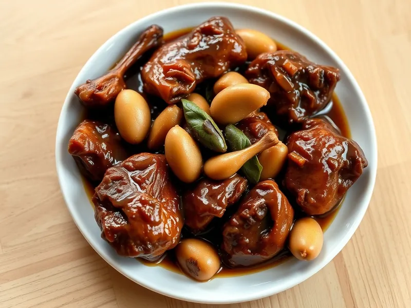

Курица адобо по-филиппински
Куриные бёдра, тушённые в соевом соусе с уксусом, чесноком и лавровым листом
30 мин3 порц.454 ккал на порциюБ 38 · Ж 30 · У 8Азиатская кухня
Открыть в приложении: порции, таймеры, список покупок
Продукты на 3 порц.
- Куриные бёдра5 шт
- Соевый соус4 ст. л.
- Уксус 9%1,5 ст. л.
- Чеснок5 зуб.
- Лавровый лист3 шт
- Перец чёрный молотый0,5 ч. л.
- Сахар2 ч. л.
- Вода120 мл
- Растительное масло1,5 ст. л.
Как готовить
- Срежьте мясо бёдер с кости и разрежьте каждое на 2-3 куска. Чеснок раздавите ножом.
- Разогрейте масло на сильном огне и обжарьте курицу кожей вниз 5-6 минут до коричневой корочки, переверните. Добавьте чеснок и жарьте 1 минуту.
- Влейте соевый соус, уксус и воду, добавьте лавровый лист, перец и сахар. Первые 5 минут не перемешивайте, чтобы ушла резкость уксуса.
- Накройте крышкой и тушите на слабом огне 12 минут.
- Снимите крышку и уварите соус на среднем огне 3-4 минуты, пока он не станет густым и блестящим. Сок из курицы при проколе прозрачный.
Совет. Наш уксус 9% крепче филиппинского, поэтому его кладут меньше; если любите кислее, добавьте ещё 1 ч. л. в конце.